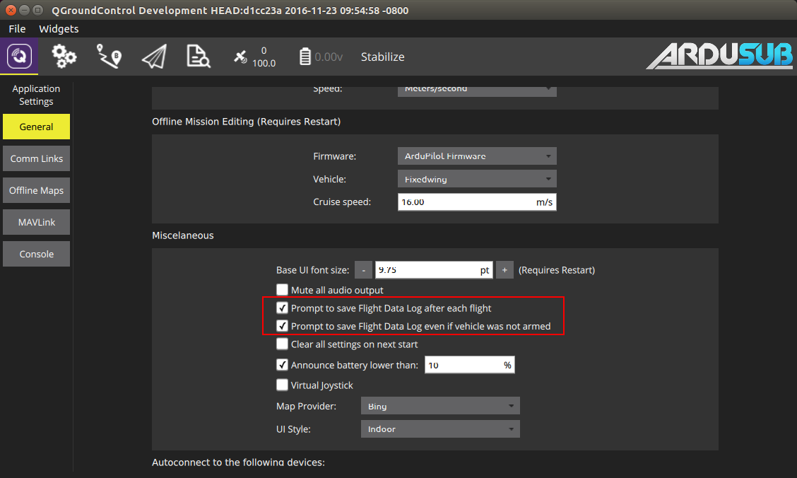
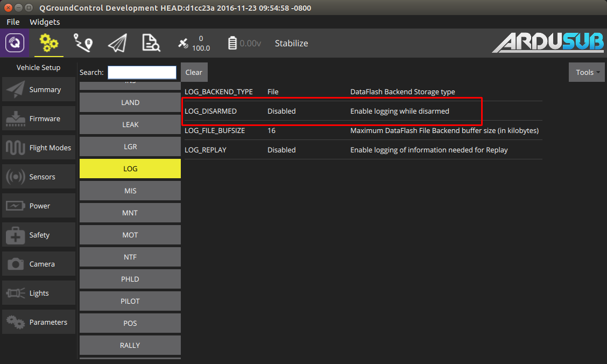
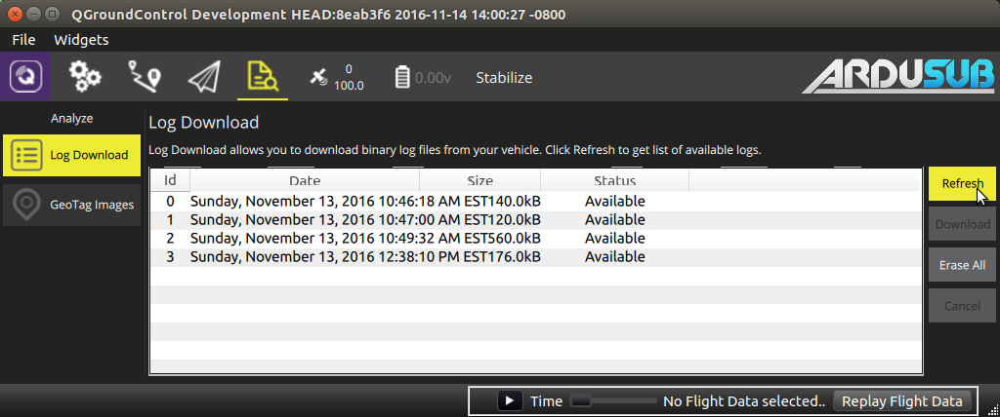

Logging
There are two types of logs that can be used to diagnose problems while running ArduSub, or to retrieve data for post-processing.
Telemetry logs
Ground Control Station (GCS) software will store all of the autopilot telemtry in a log. These telemetry logs contain all of the MAVLink messages received in their binary format. MAVProxy and QGroundControl save telemetry logs locally in a .tlog file. Telemetry logs are the preferred way of diagnosing most problems.
Once connected to the autopilot, MAVProxy will save all telemetry to a file called 'mav.tlog'. The mav.tlog file is saved under the same path from which MAVProxy was run. By default, QGroundControl only begins logging telemetry after the vehicle has been armed. QGroundControl can be configured to log telemetry while the autopilot is disarmed in the General tab of the Vehicle Seup menu (click the purple 'Q' icon in the menu bar). Select the option to save logs 'even if vehicle was not armed' in order to log telemetry while disarmed. QGroundControl saves the telemetry logs in the 'Telemetry' directory under the 'Save Path' that is specified in the General tab of the Vehicle Seup menu.

DataFlash logs
DataFlash logs are saved by the Autopilot directly to on-board memory (SD card in the case of the Pixhawk), regardless of a telemetry connection. These logs are saved in a .bin file. DataFlash logs are capable of logging data at a much faster rate than telemetry logs. The DataFlash logs are named and saved in ascending order. If GPS is available, the logs will be dated according to the GPS timestamp. DataFlash log files can be opened and inspected with MAVProxy, APM Planner 2 or Mission Planner.
By default, a new dataflah log file is created when the vehicle is initially armed, and logging is performed only while the vehicle is armed. The LOG_DISARMED parameter can be set to 'Enabled' in order to begin a DataFlash log as soon as the autopilot is booted, even before arming. With LOG_DISARMED enabled, logging will be performed whether the vehicle is armed or disarmed, until the vehicle is powered down.

Downloading
DataFlash logs can be retrieved in two ways:
Remove the Micro SD card from the Pixhawk and plug it into your computer to view and transfer the logs using a file explorer like a regular USB drive.
Download the logs remotely via QGroundControl or MAVProxy.
Log downloading via QGroundControl
Click the Analyze icon at the top of the window. The icon looks like a magnifying glass over a document.
Click the 'Refresh' button to view available logs.
Select the log you would like to download, and click 'Download'.
Multiple logs can be downloaded by highlighting the desired logs before clicking 'Download'.

Log downloading via MAVProxy
While connected to the autopilot via MAVProxy, type 'log list' in the MAVProxy console to list the available DataFlash logs onboard the autopilot.
Type 'log download X' to download log number X
While the log is downloading, you can type 'log status' to view the status of the download, or 'log cancel' to cancel the download.
Log Analysis
Telemetry logs and dataflash logs are stored in different formats, and contain different (but in many cases overlapping) data. The log entries for telemetry logs are the MAVLink messages that are documented here and here. The log entries in dataflash logs are self-documented in their binary format, but the formats can also be determined by looking at the code here.
Below is a brief description of some tools that are available for viewing and extracting data from logs.
MAVExplorer.py
MAVExplorer is a command line/graphical tool used to plot log data. MAVExplorer supports both telemetry logs and dataflash logs, and is included as part of a MAVProxy installation. Please refer to the MAVExplorer documentation for more information. Note, the log file name should not contain any spaces when using this tool
mavlogdump.py
mavlogdump.py is a command line tool used to filter and export log data to plain-text files like .csv or .json. mavlogdump.py supports both telemetry logs and dataflash logs, and it is just one of many such log analysis tools included as part of a pymavlink installation (also installed with MAVProxy). Note, the log file name should not contain any spaces when using this tool
To install mavlogdump.py, install pymavlink from pip:
pip install pymavlink
To use mavlogdump.py, refer to the output of mavlogdump.py --help:
usage: mavlogdump.py [-h] [--no-timestamps] [--planner] [--robust] [-f]
[--condition CONDITION] [-q] [-o OUTPUT] [-p]
[--format FORMAT] [--csv_sep CSV_SEP] [--types TYPES]
[--nottypes NOTTYPES] [--dialect DIALECT]
[--zero-time-base] [--no-bad-data] [--show-source]
[--show-seq] [--source-system SOURCE_SYSTEM]
[--source-component SOURCE_COMPONENT] [--link LINK]
LOG
example program that dumps a Mavlink log file. The log file is assumed to be
in the format that qgroundcontrol uses, which consists of a series of MAVLink
packets, each with a 64 bit timestamp header. The timestamp is in microseconds
since 1970 (unix epoch)
positional arguments:
LOG
optional arguments:
-h, --help show this help message and exit
--no-timestamps Log doesn't have timestamps
--planner use planner file format
--robust Enable robust parsing (skip over bad data)
-f, --follow keep waiting for more data at end of file
--condition CONDITION
select packets by condition
-q, --quiet don't display packets
-o OUTPUT, --output OUTPUT
output matching packets to give file
-p, --parms preserve parameters in output with -o
--format FORMAT Change the output format between 'standard', 'json',
and 'csv'. For the CSV output, you must supply types
that you want.
--csv_sep CSV_SEP Select the delimiter between columns for the output
CSV file. Use 'tab' to specify tabs. Only applies when
--format=csv
--types TYPES types of messages (comma separated with wildcard)
--nottypes NOTTYPES types of messages not to include (comma separated with
wildcard)
--dialect DIALECT MAVLink dialect
--zero-time-base use Z time base for DF logs
--no-bad-data Don't output corrupted messages
--show-source Show source system ID and component ID
--show-seq Show sequence numbers
--source-system SOURCE_SYSTEM
filter by source system ID
--source-component SOURCE_COMPONENT
filter by source component ID
--link LINK filter by comms link ID
mavlogdump.py Examples
Print out all STATUSTEXT messages in the log file:
mavlogdump.py --types=STATUSTEXT test.tlog
2018-05-15 12:59:42.57: STATUSTEXT {severity : 6, text : ArduSub V3.5.3 (ad81760b)}
2018-05-15 12:59:42.57: STATUSTEXT {severity : 6, text : PX4: 8d505a02 NuttX: 1a99ba58}
2018-05-15 12:59:42.57: STATUSTEXT {severity : 6, text : PX4v2 00400027 32365109 36363331}
2018-05-15 13:00:46.97: STATUSTEXT {severity : 4, text : Motor test timed out!}
2018-05-15 13:00:47.87: STATUSTEXT {severity : 6, text : ArduSub V3.5.3 (ad81760b)}
2018-05-15 13:00:47.88: STATUSTEXT {severity : 6, text : PX4: 8d505a02 NuttX: 1a99ba58}
2018-05-15 13:00:47.88: STATUSTEXT {severity : 6, text : PX4v2 00400027 32365109 36363331}
2018-05-15 13:00:49.05: STATUSTEXT {severity : 2, text : 10 second cool down required}
2018-05-15 13:00:49.05: STATUSTEXT {severity : 4, text : Arm motors before testing motors.}
2018-05-15 13:00:49.06: STATUSTEXT {severity : 4, text : motor test initialization failed!}
The output can be filtered based on message type, and also based on conditions in the message fields.
Export all ATTITUDE messages to a .csv file:
mavlogdump.py --types=ATTITUDE --format=csv test.tlog > test.csv
Export all SCALED_PRESSURE2 messages to a .csv file, filter by showing only messages while vehicle was armed
mavlogdump.py --types=SCALED_PRESSURE2 --condition HEARTBEAT.system_status==4 --format=csv test.tlog > test.csv
Export all messages to a human readable file, filter to discrete time span (only two seconds here)
mavlogdump.py --condition 'SYSTEM_TIME.time_unix_usec>1526496245000000 and SYSTEM_TIME.time_unix_usec<1526496247000000' test.tlog > test.log
Mission Planner
Mission Planner is a ground control station software like QGroundControl. Mission Planner does not have support for operating ArduSub, but the log files produced by ArduSub are compatible with the graphical analysis tools in Mission Planner. See the Mission Planner log analysis documentation for more details.